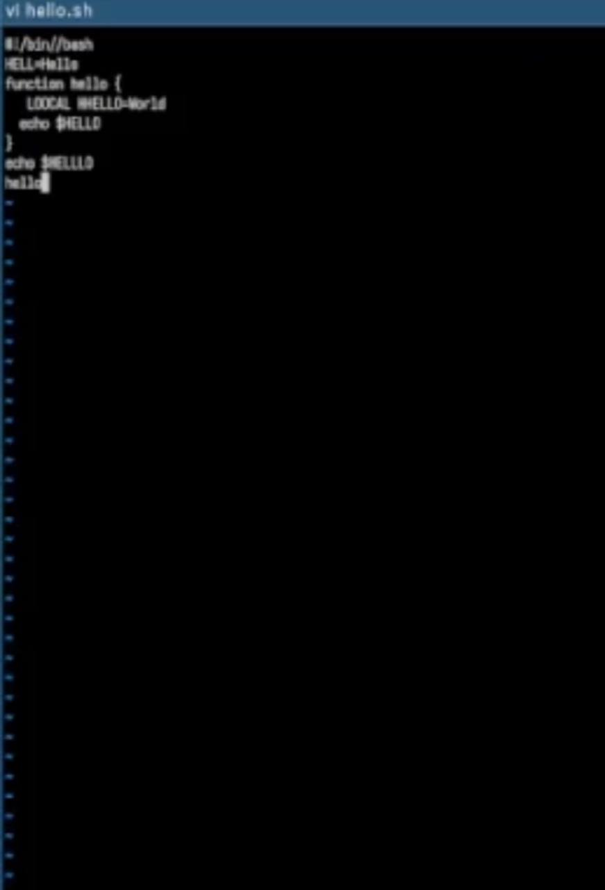
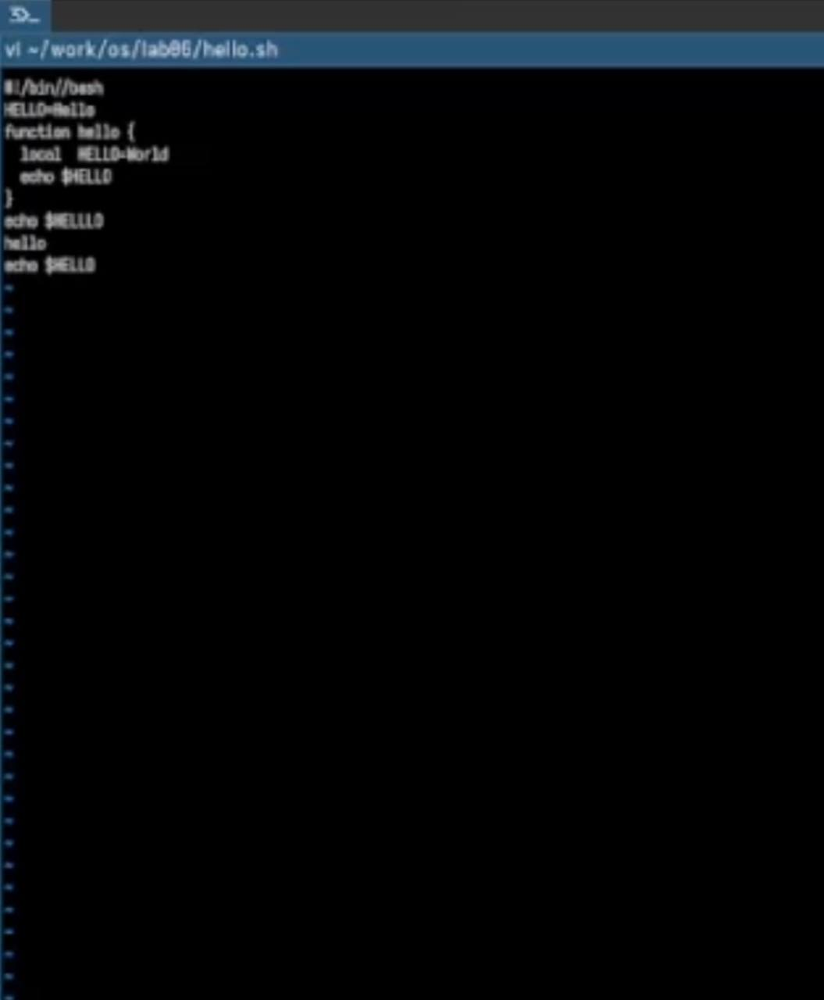

Освоить основы операционной системы Linux и отработать на практике
навыки работы с редактором vi, который входит в стандартную поставку
почти всех дистрибутивов.
2. Задание
Создайте каталог с именем ~/work/os/lab06.
Перейдите во вновь созданный каталог.
Вызовите vi и создайте файл hello.sh
Нажмите клавишу i и вводите следующий текст.
Нажмите клавишу Esc для перехода в командный режим после завершения
ввода текста.
Нажмите : для перехода в режим последней строки и внизу вашего
экрана появится приглашение в виде двоеточия.
Нажмите w (записать) и q (выйти), а затем нажмите клавишу Enter для
сохранения вашего текста и завершения работы.
Вызовите vi на редактирование файла 1 vi
~/work/os/lab06/hello.sh
Установите курсор в конец слова HELL второй строки.
Перейдите в режим вставки и замените на HELLO. Нажмите Esc для
возврата в команд- ный режим.
Установите курсор на четвертую строку и сотрите слово LOCAL.
Перейдите в режим вставки и наберите следующий текст: local, нажмите
Esc для возврата в командный режим.
Установите курсор на последней строке файла. Вставьте после неё
строку, содержащую следующий текст: echo $HELLO.
Нажмите Esc для перехода в командный режим.
Удалите последнюю строку.
Введите команду отмены изменений u для отмены последней
команды.
Введите символ : для перехода в режим последней строки. Запишите
произведённые изменения и выйдите из vi.
3. Теоретическое введение
В стандартной поставке большинства дистрибутивов Linux присутствует
интерактивный экранный редактор vi (Visual display editor). Он
функционирует в трёх режимах: - Командный режим — для навигации по файлу
и ввода команд редактирования. - Режим вставки — для непосредственного
набора и изменения содержимого файла. - Режим последней (командной)
строки — для сохранения изменений и выхода из редактора. Запуск
редактора выполняется командой vi <имя_файла>; если файл не существует,
он будет создан. Переключение в командный режим происходит по клавише
Esc. Чтобы выйти из редактора, находясь в командном режиме, нажмите
Shift-; (то есть двоеточие :), затем введите: - wq — для выхода с
сохранением изменений; - q (или q!) — для выхода без сохранения.
4. Выполнение лабораторной
работы
Пишу код из листинга в редакторе. (рис. 1)

Код из листинга
Изменяю код. (рис. 2)

Измененный код
5. Выводы
Мы освоили основы Linux и приобрели практические навыки работы со
встроенным редактором vi, присутствующим почти во всех
дистрибутивах.